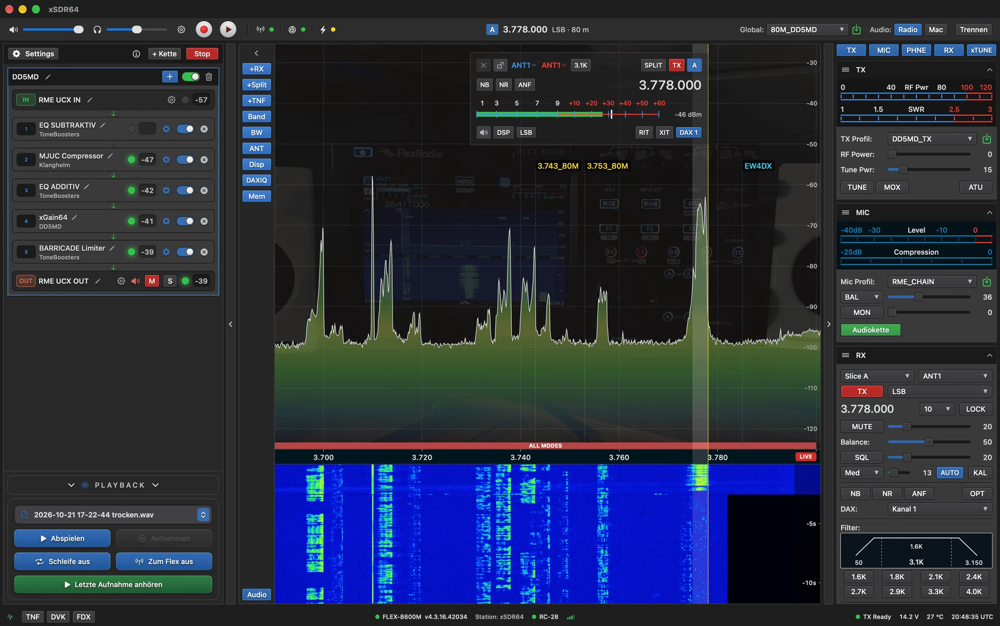

DD5MD
xSDR64
erklärt
Entwurf
▶ Rundgang
☰ Alle Punkte
Punkte aus
Hauptfenster
Alles auf einen Blick. Ein Klick auf die Punkte zeigt die Erklärung.

1
2
3
4
5
6
7
8
9
10
11
12
13
14
15
16
17
18
19
20
21
22
23
24
25
26
27
28
29
30
31
32
33
34
×
‹ Zurück
Weiter ›